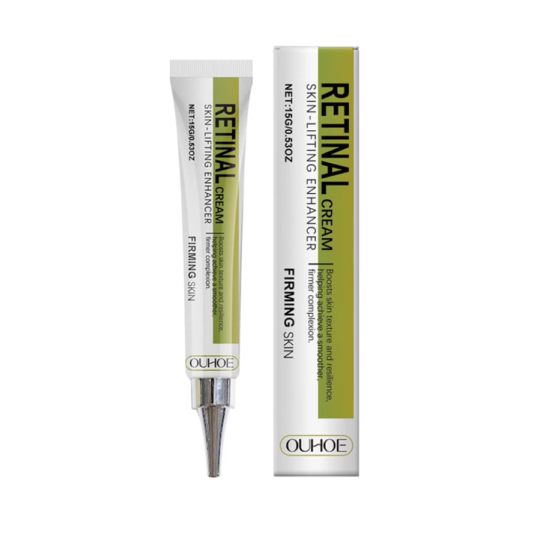

Retinal
Redutor
de Linhas

O Retinol Redutor de Linhas Lumière foi desenvolvido para mulheres que buscam resultado visível em poucos dias, sem procedimentos invasivos.
Em apenas 3 dias, suaviza rugas, linhas de expressão e bolsas abaixo dos olhos.
Conteúdo: 15ml · Entrega: 15 a 30 dias úteis
Composição completa:
Aqua (Água) · Glycerin (Glicerina) · retinal (retinal) · Retinaldehyde (Retinaldeído) · Ascorbic Acid (Vitamina C) · Soluble Collagen (Colágeno Solúvel) · Caprylic/Capric Triglyceride (Triglicerídeo Caprílico/Cáprico) · Tocopherol (Vitamina E) · Bisabolol (Bisabolol) · BHT (Butil-hidroxitolueno) · Disodium EDTA (Edetato Dissódico) · Phenoxyethanol (Fenoxietanol)
Fórmula aprovada por dermatologistas. Segura para uso ao redor dos olhos e peles sensíveis.
- Com a pele limpa, aplique uma pequena quantidade nas áreas desejadas
- Espalhe com batidinhas suaves, sem esfregar
- Aguarde 3 minutos sem fazer expressões faciais
- Para maquiagem, espere 15 minutos. Prefira produtos em pó
Apague anos de envelhecimento
em apenas 2 dias

Reduz linhas finas
e rugas
"Nada tinha funcionado pra acabar com as minhas rugas... até agora. Me olho no espelho e me sinto 10 anos mais jovem." — Catiane Borges, 58 anos

Elimina bolsas
sob os olhos
"Quando eu uso, nem uso mais corretivo para esconder minhas olheiras. O resultado é incrível." — Odete Lecy, 63 anos

Efeito lift e
pele mais firme
"Meu rosto estava flácido, mas esse retinal resolveu completamente. Me sinto jovem e segura outra vez." — Maria Deusa Amorim, 55 anos
3 passos simples,
resultados imediatos

Aplique
Com a pele limpa, aplique uma pequena quantidade nas linhas de expressão e regiões com rugas que deseja reduzir.

Espalhe
Distribua com batidinhas suaves, sem esfregar. O produto deve ficar uniforme sobre a pele.

Aguarde 3 min
Fique sem fazer expressões por 3 minutos.
É assim que mulheres 50+
estão se livrando das
rugas

"Me senti mais confiante em minutos"
"Minhas rugas ao redor dos olhos praticamente desapareceram em minutos! Não vivo mais sem esse retinal!"

"Natural como se sempre fosse assim"
"Passei o retinal antes de um evento e todos perguntaram o que eu fiz para estar tão radiante! Efeito maravilhoso sem parecer artificial."

"Efeito impressionante e imediato"
"As bolsas sob os olhos me faziam parecer cansada. Agora, o retinal me dá aquele efeito lifting redutor que eu tanto precisava!"
Pronta para se sentir
10 anos mais jovem?
Junte-se a mais de 50.000 mulheres que já transformaram sua pele — sem agulhas, sem dor, sem sair de casa.
Garantia incondicional de 90 dias · Frete grátis
90 dias
seguro
todo Brasil